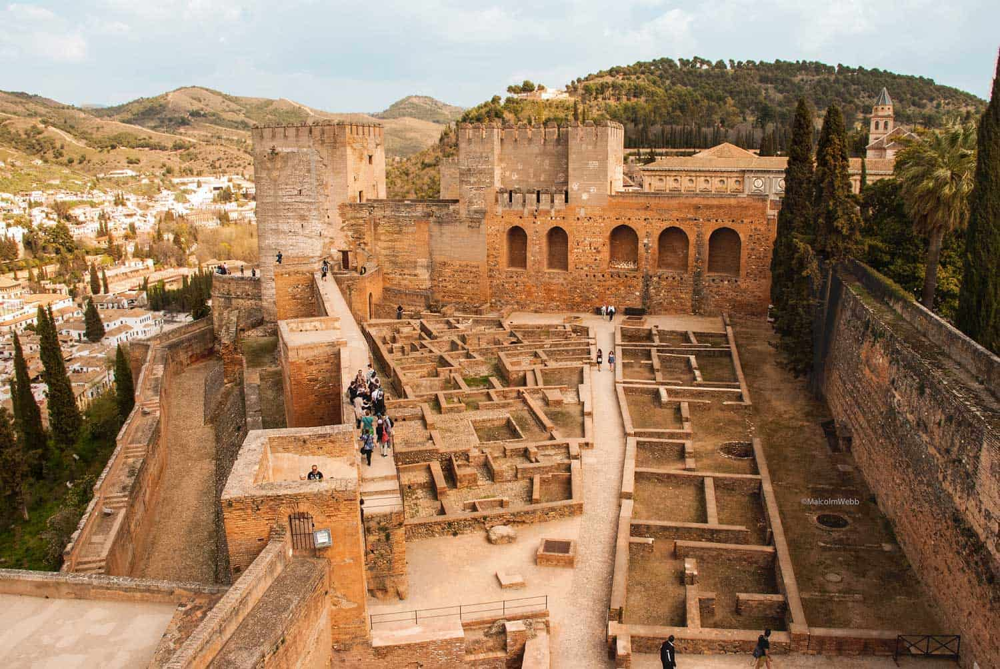
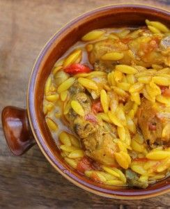

¡Bienvenidos a nuestra web de super recetas! Nuestra primera sección será de recetas dulces. Esperemos que os guste.
Leche.......1 litro Piel de limón.......1 Canela en rama.......2 Azúcar.......200 g Maizena cucharadas soperas.......10 Yemas de huevo.......6 Chocolate fondant.......200 g Nata líquida.......200 ml Mantequilla.......50 g Leche para remojar las galletas Galletas cuadradas......3 paquetes
Empezamos hirviendo la leche la noche anterior, con la piel de limón y las ramas de canela. La dejamos infusionar toda la noche para intensificar su sabor. Después, en un cazo deshacemos 200 gr de azúcar en un poco de la leche (previamente colada), añadimos las yemas de huevo y la maizena.Colocamos el cazo al fuego y añadimos la leche poco a poco y dejamos hervir la leche hasta que la mezcla espese, siempre removiendo para que no se pegue. La reservamos, cubriendo el cazo con papel film. Para que no se forme costra es necesario que el papel film toque directamente con la crema. Ponemos una capa de galletas remojadas ligeramente en leche (no demasiado para que no se rompan) en el fondo del molde. Por encima repartimos la crema pastelera y sobre ella ponemos dos capas más de galletas remojadas ligeramente en leche. Metemos el molde en la nevera. Mientras preparamos la cobertura de chocolate. Ponemos la nata y el chocolate en un cazo a fuego lento hasta que se derrita el chocolate. Retiramos el cazo del fuego y añadimos la mantequilla. Dejamos que se temple y cuando esté casi fría la vertemos en el molde. Guardar en la nevera como mínimo 2 horas, mejor toda la noche.

El texto que yo quiera.El texto que yo quiera.El texto que yo quiera.El texto que yo quiera.El texto que yo quiera.El texto que yo quiera.El texto que yo quiera.El texto que yo quiera.El texto que yo quiera.El texto que yo quiera.El texto que yo quiera.El texto que yo quiera.El texto que yo quiera.El texto que yo quiera.El texto que yo quiera.El texto que yo quiera.vEl texto que yo quiera.El texto que yo quiera.El texto que yo quiera.El texto que yo quiera.El texto que yo quiera.El texto que yo quiera.El texto que yo quiera.El texto que yo quiera.El texto que yo quiera.El texto que yo quiera.
Para contemplar otra receta| TITULO | |||
| NOMBRE | INFORMACIÓN | ||
| Ciudad | De interés | Comida típica | Más |
| Valencia | Oceanografic | Paella | Horchata |
| Almería |  |  | Cherigan |